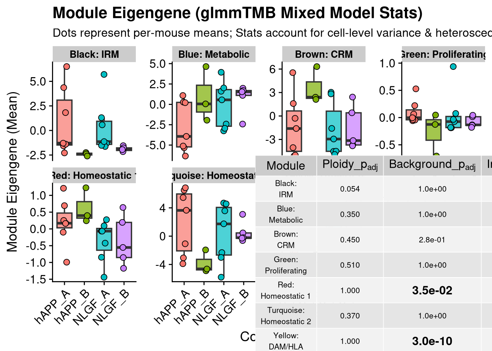
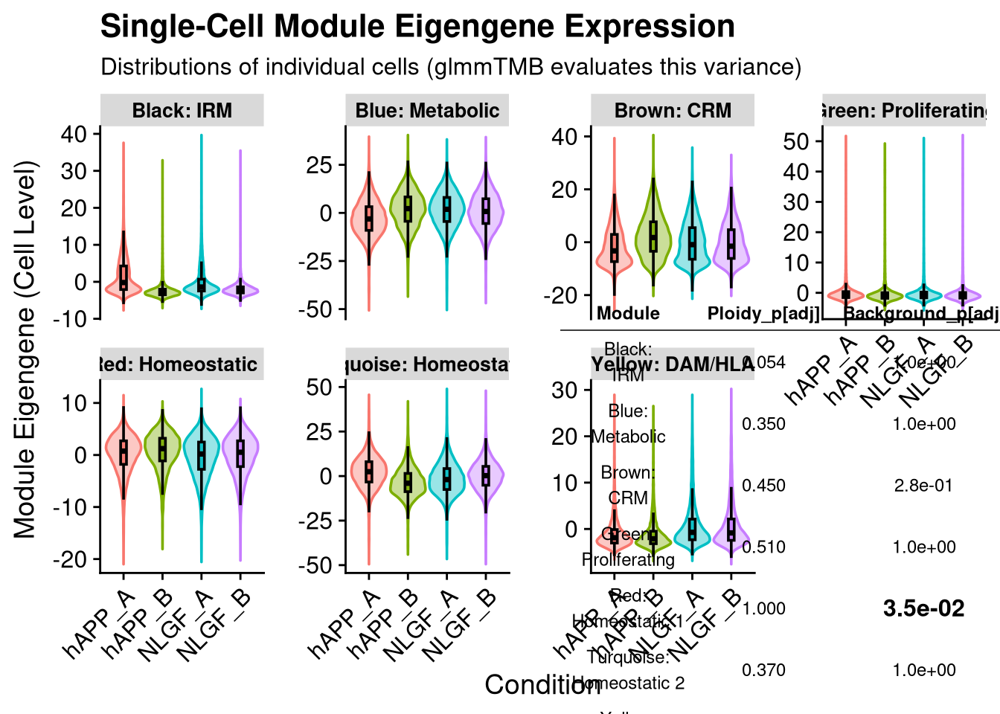

Code
rm(list = ls())Author: Carlo Zanetti
Tests whether WGCNA co-expression modules (from hdwgcna_trisomy.qmd) differ between experimental conditions using glmmTMB mixed models with a dispersion formula to account for heteroscedasticity. Produces boxplot and violin summaries with inset statistics tables.
Inputs: output/run1/wgcna/objects/seurat_wgcna_basic.qs2 Outputs: Stats CSVs and PDF figures written to output/run1/wgcna/
1. Data Loading: Imports the Seurat object containing WGCNA results.
2. Module Extraction: Retrieves Harmonized Module Eigengenes (hMEs) and Annotation: Renames color-based modules to biological names (e.g., “Metabolic”).
3. Pseudobulking: Aggregates single-cell ME scores into per-sample averages.
4. Visualization & Stats: Generates boxplots with statistical testing to compare module activity across groups.
rm(list = ls())knitr::opts_chunk$set(echo = TRUE)
library(Seurat)
library(tidyverse)
library(hdWGCNA)Warning: replacing previous import 'GenomicRanges::intersect' by
'SeuratObject::intersect' when loading 'hdWGCNA'Warning: replacing previous import 'GenomicRanges::setdiff' by 'dplyr::setdiff'
when loading 'hdWGCNA'Warning: replacing previous import 'GenomicRanges::union' by 'dplyr::union'
when loading 'hdWGCNA'Warning: replacing previous import 'dplyr::as_data_frame' by
'igraph::as_data_frame' when loading 'hdWGCNA'Warning: replacing previous import 'Seurat::components' by 'igraph::components'
when loading 'hdWGCNA'Warning: replacing previous import 'dplyr::groups' by 'igraph::groups' when
loading 'hdWGCNA'Warning: replacing previous import 'dplyr::union' by 'igraph::union' when
loading 'hdWGCNA'Warning: replacing previous import 'GenomicRanges::subtract' by
'magrittr::subtract' when loading 'hdWGCNA'Warning: replacing previous import 'Matrix::as.matrix' by 'proxy::as.matrix'
when loading 'hdWGCNA'Warning: replacing previous import 'igraph::groups' by 'tidygraph::groups' when
loading 'hdWGCNA'library(glmmTMB)
library(emmeans)
library(car)
library(qs2)
library(foreach)
library(doSNOW)
library(parallel)
library(glue)
library(cowplot)
library(ggpubr)run_num <- "run1"
out_dir <- file.path("output", run_num, "wgcna")
graphs_dir <- file.path(out_dir, "graphs")
objects_dir <- file.path(out_dir, "objects")
wgcna_name <- glue("emily_jan_{run_num}")
dir.create(graphs_dir, recursive = TRUE, showWarnings = FALSE)
dir.create(objects_dir, recursive = TRUE, showWarnings = FALSE)required_input <- file.path(objects_dir, "seurat_wgcna_basic.qs2")
if (!file.exists(required_input)) {
message("Required input not found: ", required_input, "\nRun hdwgcna_trisomy.qmd first.")
knitr::knit_exit()
}
seurat_obj <- qs_read(required_input)
seurat_obj$group_id <- as.factor(seurat_obj@meta.data$group_id)#BDAG56.1F was wrongly input into the metadata - should be BDAE56.1F - hu/hu not NLGF
#update name, group_id, app_genotype
table(seurat_obj@meta.data$orig.ident, seurat_obj@meta.data$group_id)
hAPP_A hAPP_B NLGF_A NLGF_B
BDAE34.1A 2020 0 0 0
BDAE34.1C 5009 0 0 0
BDAE34.1E 2857 0 0 0
BDAE50.1A 0 3666 0 0
BDAE50.1C 0 3085 0 0
BDAE50.1E 0 458 0 0
BDAE56.1C 3531 0 0 0
BDAE56.1D 4954 0 0 0
BDAE56.1E 5029 0 0 0
BDAG167.1B 0 0 2399 0
BDAG167.1C 0 0 1611 0
BDAG168.1A 0 0 0 697
BDAG168.1B 0 0 0 2388
BDAG168.1C 0 0 0 1985
BDAG169.1E 0 0 787 0
BDAG185.1A 0 0 0 5196
BDAG185.1B 0 0 8298 0
BDAG185.1D 0 0 0 5560
BDAG185.1E 0 0 958 0
BDAG185.1F 0 0 6379 0
BDAG185.1H 0 0 5736 0
BDAG56.1F 0 0 1285 0seurat_obj@meta.data <- seurat_obj@meta.data %>%
mutate(
app_genotype = case_when(orig.ident == "BDAG56.1F" ~ "hAPP",
TRUE ~ app_genotype),
orig.ident = case_when(orig.ident == "BDAG56.1F" ~ "BDAE56.1F",
TRUE ~ orig.ident)
)
seurat_obj@meta.data$group_id <- paste(seurat_obj@meta.data$app_genotype, seurat_obj@meta.data$microglia, sep = "_")
table(seurat_obj@meta.data$orig.ident, seurat_obj@meta.data$group_id)
hAPP_A hAPP_B NLGF_A NLGF_B
BDAE34.1A 2020 0 0 0
BDAE34.1C 5009 0 0 0
BDAE34.1E 2857 0 0 0
BDAE50.1A 0 3666 0 0
BDAE50.1C 0 3085 0 0
BDAE50.1E 0 458 0 0
BDAE56.1C 3531 0 0 0
BDAE56.1D 4954 0 0 0
BDAE56.1E 5029 0 0 0
BDAE56.1F 1285 0 0 0
BDAG167.1B 0 0 2399 0
BDAG167.1C 0 0 1611 0
BDAG168.1A 0 0 0 697
BDAG168.1B 0 0 0 2388
BDAG168.1C 0 0 0 1985
BDAG169.1E 0 0 787 0
BDAG185.1A 0 0 0 5196
BDAG185.1B 0 0 8298 0
BDAG185.1D 0 0 0 5560
BDAG185.1E 0 0 958 0
BDAG185.1F 0 0 6379 0
BDAG185.1H 0 0 5736 0# 1. Get the MEs (This usually contains just the module numeric data)
hMEs <- GetMEs(seurat_obj, harmonized=TRUE)
# 2. Define your map
module_name_mapping <- c(
"blue" = "Blue: Metabolic",
"turquoise" = "Turquoise: Homeostatic 2",
"brown" = "Brown: CRM",
"yellow" = "Yellow: DAM/HLA",
"green" = "Green: Proliferating",
"black" = "Black: IRM",
"red" = "Red: Homeostatic 1"
)
hMEs <- hMEs[, names(hMEs) %in% names(module_name_mapping)]
names(hMEs) <- module_name_mapping[names(hMEs)]
print(head(hMEs)) Blue: Metabolic Red: Homeostatic 1 Black: IRM
BDAG185.1A_AAACCAAAGGCGATCT-1 -4.4795167 -0.3013563 -1.407622
BDAG185.1A_AAACCATTCCCTCTGA-1 -2.4648912 1.6567022 -2.210293
BDAG185.1A_AAACCCGCATGGAATC-1 -43.1663181 -17.8491256 -3.534686
BDAG185.1A_AAACCCTGTAAGCTGA-1 4.9713370 5.2401595 -2.051032
BDAG185.1A_AAACCCTGTGAAGGCT-1 -1.7578768 4.0500428 -4.374725
BDAG185.1A_AAACCGCTCAAGTAAG-1 0.7732584 0.1008916 -1.027460
Turquoise: Homeostatic 2 Green: Proliferating
BDAG185.1A_AAACCAAAGGCGATCT-1 -1.879447 -0.5895945
BDAG185.1A_AAACCATTCCCTCTGA-1 4.270560 -1.2086033
BDAG185.1A_AAACCCGCATGGAATC-1 44.829351 0.4176434
BDAG185.1A_AAACCCTGTAAGCTGA-1 -4.556453 -0.3720687
BDAG185.1A_AAACCCTGTGAAGGCT-1 -5.415115 -1.8826627
BDAG185.1A_AAACCGCTCAAGTAAG-1 3.518179 1.3471348
Brown: CRM Yellow: DAM/HLA
BDAG185.1A_AAACCAAAGGCGATCT-1 5.796215 -0.7622892
BDAG185.1A_AAACCATTCCCTCTGA-1 3.442132 -1.8169413
BDAG185.1A_AAACCCGCATGGAATC-1 -15.987499 2.1552661
BDAG185.1A_AAACCCTGTAAGCTGA-1 8.755881 -2.1493738
BDAG185.1A_AAACCCTGTGAAGGCT-1 -3.246417 -3.1529104
BDAG185.1A_AAACCGCTCAAGTAAG-1 7.412971 2.8614209meta <- seurat_obj@meta.data
ME_long <- hMEs %>%
rownames_to_column("Cell_ID") %>%
pivot_longer(cols = -Cell_ID, names_to = "Module", values_to = "ME_Value") %>%
left_join(
meta %>%
rownames_to_column("Cell_ID") %>%
select(Cell_ID, Ploidy = microglia, Background = app_genotype, Mouse = orig.ident, Batch = pool_id),
by = "Cell_ID"
) %>%
mutate(
Ploidy = factor(Ploidy),
Background = factor(Background),
Mouse = factor(Mouse),
Batch = factor(Batch)
)# Set contrasts for Type III ANOVA
options(contrasts = c("contr.sum", "contr.poly"))
# Initialize an empty list to store results
all_results_list <- list()
# Get unique modules
unique_modules <- unique(ME_long$Module)
cat("Running glmmTMB models for", length(unique_modules), "modules...\n")Running glmmTMB models for 7 modules...for (mod in unique_modules) {
cat("Processing:", mod, "\n")
# Filter data for the specific module
df_mod <- ME_long %>% filter(Module == mod)
# 1. Fit the Model (Gaussian with dispersion formula for heteroscedasticity)
model_fit <- tryCatch({
glmmTMB(
formula = ME_Value ~ Ploidy * Background + (1 | Mouse),
dispformula = ~ Ploidy * Background,
data = df_mod,
family = gaussian(link="identity")
)
}, error = function(e) {
message("Model failed for ", mod, ": ", e$message)
return(NULL)
})
if (is.null(model_fit)) next
# 2. Extract Omnibus Effects (Type III Anova)
anova_res <- tryCatch({
as.data.frame(car::Anova(model_fit, type = "III"))
}, error = function(e) return(NULL))
# 3. Extract Pairwise / Simple Effects
emm_results <- tryCatch({
spec1 <- pairs(emmeans(model_fit, ~ Ploidy | Background), reverse = TRUE)
spec2 <- pairs(emmeans(model_fit, ~ Background | Ploidy), reverse = TRUE)
rbind(as.data.frame(spec1), as.data.frame(spec2))
}, error = function(e) return(NULL))
if (is.null(emm_results) | is.null(anova_res)) next
# 4. Combine Statistics
emm_results$Module <- mod
emm_results$Interaction_P <- anova_res["Ploidy:Background", "Pr(>Chisq)"]
emm_results$Ploidy_Main_P <- anova_res["Ploidy", "Pr(>Chisq)"]
emm_results$Background_Main_P <- anova_res["Background", "Pr(>Chisq)"]
# Append to the list
all_results_list[[mod]] <- emm_results
}Processing: Blue: Metabolic
Processing: Red: Homeostatic 1
Processing: Black: IRM
Processing: Turquoise: Homeostatic 2
Processing: Green: Proliferating
Processing: Brown: CRM
Processing: Yellow: DAM/HLA # Reset contrasts
options(contrasts = c("contr.treatment", "contr.poly"))
cat("All models completed.\n")All models completed.# Combine list into a dataframe
final_df <- do.call(rbind, Filter(Negate(is.null), all_results_list))
# 1. FDR on the simple pairwise comparisons (A - B)
final_df <- final_df %>%
mutate(FDR_Pairwise = p.adjust(p.value, method = "fdr"))
# 2. FDR on the Main Effects and Interaction (The "Omnibus" stats)
# We group by Module because these P-values are identical for all contrasts within a module
# 1. Create the summary with explicit column names
stats_summary <- final_df %>%
group_by(Module) %>%
summarise(
Ploidy_P = dplyr::first(Ploidy_Main_P),
Background_P = dplyr::first(Background_Main_P),
Interaction_P = dplyr::first(Interaction_P),
.groups = "drop"
) %>%
mutate(
Ploidy_adjP = p.adjust(Ploidy_P, method = "bonferroni"),
Background_adjP = p.adjust(Background_P, method = "bonferroni"),
Interaction_adjP= p.adjust(Interaction_P, method = "bonferroni")
)
# Join them back together
final_stats_df <- left_join(final_df, stats_summary %>% select(Module, ends_with("FDR")), by = "Module")
write.csv(final_stats_df, file.path(objects_dir, "glmmTMB_Module_Stats_Full_.csv"), row.names = FALSE)# 1. Prepare Mouse-level data (for dots/boxes)
ME_mouse <- ME_long %>%
group_by(sample_id = Mouse, group_id = paste0(Background, "_", Ploidy), Module) %>%
summarise(ME_Value = mean(ME_Value), .groups = "drop")
# 2. Format the Stats Table Data
table_data <- stats_summary %>%
dplyr::select(Module, dplyr::contains("adjP")) %>%
dplyr::mutate(
Module = stringr::str_replace(Module, ": ", ":\n"),
dplyr::across(where(is.numeric), ~signif(., 2))
)
colnames(table_data) <- gsub("adjP", "p[adj]", colnames(table_data))
# 3. Create the Table Object
tight_theme <- ttheme(
base_size = 8,
padding = unit(c(4, 3), "mm"),
colnames.style = colnames_style(parse = TRUE)
)
table_p <- ggtexttable(table_data, rows = NULL, theme = tight_theme)
# 4. Bold Significant FDR Values in the Table
for(i in 1:nrow(table_data)) {
for(j in 2:ncol(table_data)) {
val <- as.numeric(table_data[i, j])
if(!is.na(val) && val < 0.05) {
table_p <- table_p %>% table_cell_font(row = i + 1, column = j, face = "bold")
}
}
}
# 5. Build the Main Plot
p_main <- ggplot(ME_mouse, aes(x = group_id, y = ME_Value, fill = group_id)) +
geom_boxplot(outlier.shape = NA, alpha = 0.7) +
geom_jitter(width = 0.15, shape = 21, size = 2.5, color = "black", stroke = 0.5) +
facet_wrap(~Module, scales = "free_y", ncol = 4) +
theme_cowplot() +
labs(
title = "Module Eigengene (glmmTMB Mixed Model Stats)",
subtitle = "Dots represent per-mouse means; Stats account for cell-level variance & heteroscedasticity",
y = "Module Eigengene (Mean)",
x = "Condition"
) +
theme(
axis.text.x = element_text(angle = 45, hjust = 1),
legend.position = "none",
strip.text = element_text(face = "bold", size = 10)
)
# 6. Combine Plot and Table using cowplot
# x, y, width, and height might need slight tweaks depending on your screen resolution
final_plot <- ggdraw(p_main) +
draw_plot(table_p, x = 0.74, y = 0.05, width = 0.2, height = 0.45)
# 7. Save and Print
pdf(file.path(graphs_dir, "Module_Boxplots_glmmTMB_with_Inset.pdf"), width = 15, height = 10)
print(final_plot)
dev.off()png
2 print(final_plot)
# 1. Prepare Cell-level data for violins (NOT pseudobulked)
plot_data <- ME_long %>%
mutate(group_id = factor(paste0(Background, "_", Ploidy)))
# 3. Create the Table Object with a matching "light" theme
table_theme <- ttheme("light", base_size = 9, padding = unit(c(4, 4), "mm"))
table_p <- ggtexttable(table_data, rows = NULL, theme = table_theme)
# 4. Bold Significant FDR Values in the Table
for(i in 1:nrow(table_data)) {
for(j in 2:ncol(table_data)) {
val <- as.numeric(table_data[i, j])
if(!is.na(val) && val < 0.05) {
table_p <- table_p %>% table_cell_font(row = i + 1, column = j, face = "bold")
}
}
}
# 5. Build the Main Plot (Violin + Boxplot)
p_main <- ggplot(plot_data, aes(x = group_id, y = ME_Value, fill = group_id)) +
# Violin plot for single-cell distributions (transparent with colored outlines)
geom_violin(aes(color = group_id), scale = "width", alpha = 0.4, trim = FALSE) +
# Narrow, opaque boxplot overlaid with a solid black outline
geom_boxplot(width = 0.15, alpha = 0.9, color = "black", outlier.shape = NA) +
facet_wrap(~Module, scales = "free_y", ncol = 4) +
theme_cowplot() +
labs(
title = "Single-Cell Module Eigengene Expression",
subtitle = "Distributions of individual cells (glmmTMB evaluates this variance)",
y = "Module Eigengene (Cell Level)",
x = "Condition"
) +
theme(
axis.text.x = element_text(angle = 45, hjust = 1),
legend.position = "none",
# Grey headers for the facets
strip.background = element_rect(fill = "grey85", color = NA),
strip.text = element_text(face = "bold", size = 10, color = "black"),
panel.spacing = unit(1, "lines")
)
# 6. Combine Plot and Table using cowplot
# Positions the table exactly in the empty bottom-right slot of a 4x2 grid
final_plot <- ggdraw(p_main) +
draw_plot(table_p, x = 0.76, y = 0.05, width = 0.23, height = 0.42)
# 7. Save and Print
pdf(file.path(graphs_dir, "Module_Violin_glmmTMB_with_Inset_bonferonni.pdf"), width = 15, height = 10)
print(final_plot)
dev.off()png
2 print(final_plot)
write.csv(ME_long, file.path(objects_dir, "wgcna_cell_level_data.csv"), row.names = FALSE)
write.csv(stats_summary, file.path(objects_dir, "wgcna_stats_summary_glmmTMB.csv"), row.names = FALSE)